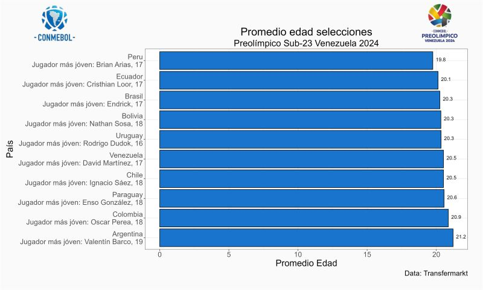

El próximo sábado empieza un torneo muy importante a nivel de selecciones, el Preolímpico sub23 Venezuela 2024 ⚽ , el mismo se disputará en tres sedes Caracas, Valencia y Barquisimeto (fase final).
Venezuela se ubica en el grupo A junto con las selecciones de Bolivia, Brasil, Colombia y Ecuador. Por su parte el grupo B se conforma por las selecciones de Argentina, Paraguay, Uruguay, Chile y Perú.
El mismo es una excelente oportunidad para ver el desempeño de jugadores jóvenes de Sudamérica, el promedio de edad de este torneo se ubica en 20.44 años.
Recopilando la información disponible en Transfermarkt logré generar una base de datos sencilla pero con información relevante, en la misma pude recopilar información sobre la edad, altura, club, valor de mercado de todas las selecciones que van a participar.
En esta publicación es la primera de varias en donde mostraré algunos insights interesantes relacionados con cada selección, estos son algunos relacionados con la edad,
💡 Perú es la selección que menor edad promedio tiene, cuenta con una media de 19.8 años.
💡 Le siguen de cerca Ecuador (20.1 años) y Brasil con 20.3 años.
💡 En el otro extremo se encuentra Colombia con un promedio de 20.9 años y Argentina que cuenta con 21.2 años.
Es interesante mencionar que la edad máxima permitida es 23 años, sin embargo los equipos apuestan por traer a más jugadores jóvenes.
💡 El jugador más joven del torneo es Rodrigo Dudok de Uruguay, este extremo izquierdo cuenta con 16 años y juega para el Defensor SC categoría U19.